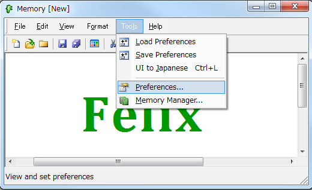
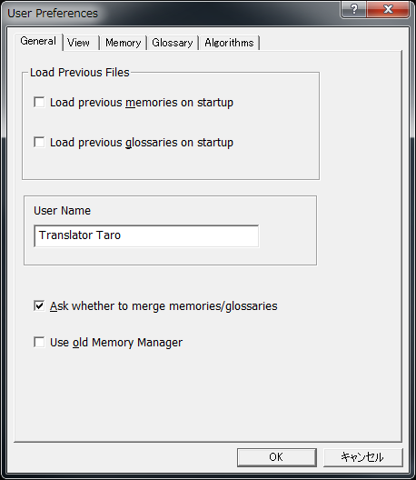
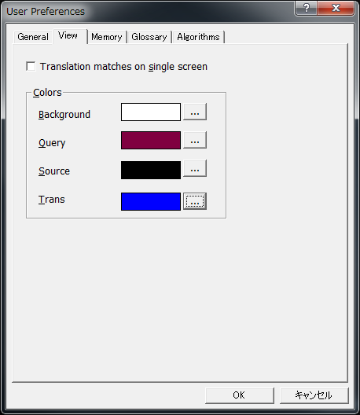
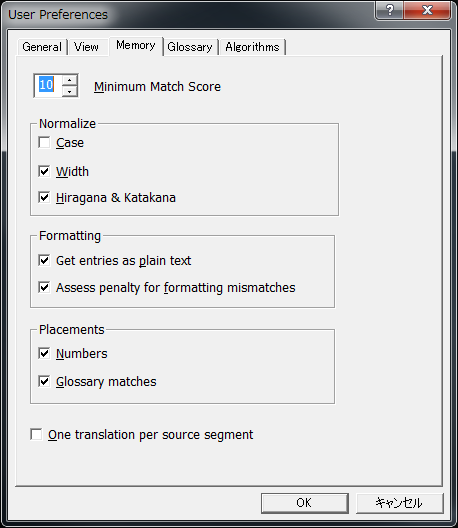
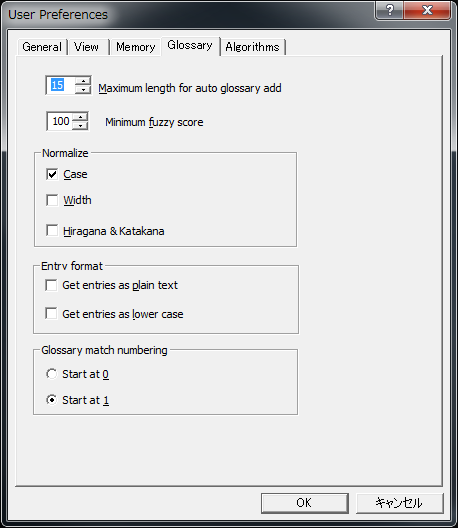
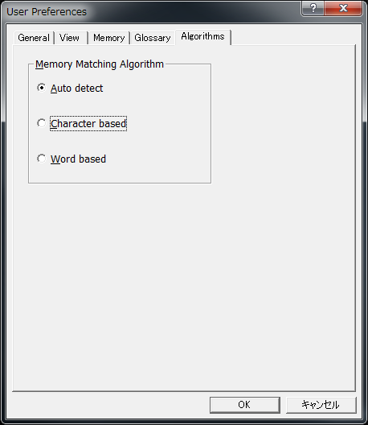

4.2.12. Set User Preferences¶
You can configure the behavior of Felix in a number of ways. Preferences are saved across sessions; if you quit Felix and start it up again, the preferences from your last session will be set.
To set the user preferences, select Tools ‣ Preferences from the menu.

The Preferences menu
The User Preferences dialog appears. There are five property pages:
- The General Page;
- The View Page;
- The Memory Page;
- The Glossary Page; and
- The Algorithms Page
4.2.12.1. General Page¶

- Load previous files
- Load previous memories on startup
The currently loaded TMs will be loaded the next time that Felix starts.
- Load previous glossaries on startup
The currently loaded glossaries will be loaded the next time that Felix starts.
4.2.12.2. View Page¶

- Translation matches on single screen
- Show all translation matches on a single screen, much like how glossary search results are displayed.
- Background color
- Set the background color for the Memory window display area. This is useful when you are translating white or other light-color text, or to suit your own preferences.
- Query color
- Set the query text color in the match view. This is useful for telling the query, source and translation apart at a glance.
- Source color
- Set the source text color in the match view. This is useful for telling the query, source and translation apart at a glance.
- Trans color
- Set the translation text color in the match view. This is useful for telling the query, source and translation apart at a glance.
- Highlight glossary matches
- Highlight glossary matches in the Memory window.
4.2.12.3. Memory Page¶

- Minimum Match Score
- The minimum score to use for matches.
- Ignore case
- Ignore case when calculating the scores for translation matches.
- Ignore width
- Ignore fullhalf width distinctions when calculating the scores for translation matches.
- Ignore Hiragana & Katakana
- Ignore case when calculating the scores for translation matches.
- Get entries as plain text
- Retrieve translations as plain text, without any formatting information.
- Assess penalty for formatting mismatches
- Apply a small penalty (usually about 1 to 5%) from the match score if the text formatting (bold, italic, etc.) of the query and entry source segment do not match.
4.2.12.3.1. Placements¶
Numbers
Automatically replace numbers in the translation. See Number Placement for details.Glossary matches
Automatically replace glossary matches in the translation. See Glossary Placement for details.Rules
Automatically insert rule-baed substitutions into the translation. You can register any regular expression as a substitution rule. See Rule-based Placement for details.
4.2.12.4. Glossary Page¶

- Maximum length for auto glossary add
- When you register an entry in the memory, if the Source field is this number of characters or fewer, it is automatically added to the glossary as well. Set to 0 to disable auto glossary registration.
- Ignore case
- Ignore case when calculating the scores for glossary matches.
- Ignore width
- Ignore full/half width distinctions when calculating the scores for glossary matches.
- Ignore Hiragana & Katakana
- Ignore case when calculating the scores for glossary matches.
- Get entries as plain text
- Retrieve glossary translations as plain text, without any formatting information.
- Get entries as lower case
- Retrieve glossary translations as all lower case. For instance, if the translation in the glossary is “File,” it will be retrieved as “file.”
- Minimum score for fuzzy matches
- Use this feature to enable fuzzy matching for glossary searches. Set to a score between 0 and 100. Set the score to 100 to disable fuzzy matching.
4.2.12.5. Algorithms Page¶

- Memory Matching Algorithm
- Auto detect:
- Felix automatically detects the matching algorithm (Default).
- Character-based:
- Matching is based on individual characters. This algorithm is best suited to languages like Japanese, in which individual words are not separated by spaces.
- Word-based:
- Matching is based on words. This algorithm may be better suited to European and other languages where words are separated by commas.
When you are finished making your settings, click OK.